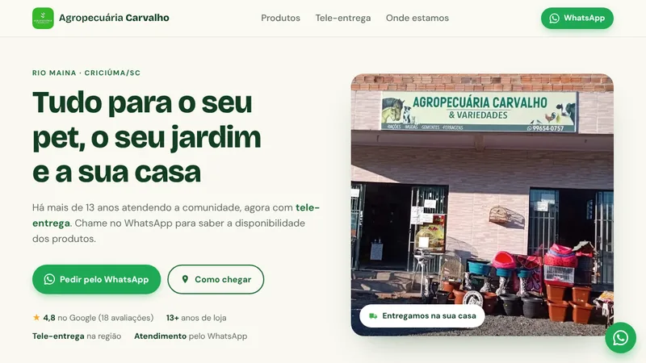

Disponível para vaga back-end júnior
Gabriel
Pacheco
Kiesel
Desenvolvedor back-end Java. Construo APIs REST com Spring Boot pensando no que acontece em produção: dados consistentes, testes automatizados e código fácil de manter.
- Java 21
- Spring Boot
- RabbitMQ
- PostgreSQL
- Redis
- Docker

Sobre
Quem sou eu
Sou desenvolvedor back-end Java, com foco em Spring Boot, APIs REST e PostgreSQL. Construo APIs e microsserviços com mensageria, cache, autenticação e testes automatizados, usando Docker e integração contínua com GitHub Actions.
Gosto de entender o porquê de cada decisão técnica. Nos meus projetos, resolvi problemas reais: impedir que duas pessoas reservem o mesmo horário ao mesmo tempo, acelerar respostas com cache e garantir com testes que tudo continua funcionando.
Também crio sites como freelancer para negócios da região. Busco uma vaga de desenvolvedor back-end júnior para contribuir com projetos reais e crescer junto com um time.
- 10+ projetos no GitHub
- 100+ testes automatizados
- 4 APIs com Docker e CI
Skills
O que eu sei fazer
-
Back-end
APIs REST com Java e Spring Boot, organizadas em camadas, com validação e tratamento de erros padronizado.
-
Banco de dados
Modelagem relacional, consultas com agregação, índices, migrações versionadas e cache.
-
Segurança
Autenticação stateless com token, senhas criptografadas e isolamento dos dados de cada usuário.
-
Testes
Testes unitários e de integração, inclusive testes de concorrência que provam que as regras de negócio se mantêm sob carga.
-
DevOps
Aplicações em contêiner, ambiente completo subindo com um comando e pipeline que testa cada push.
-
Fundamentos
Algoritmos, estruturas de dados, redes de computadores e front-end para construir interfaces quando preciso.
Projetos
O que já construí
Em destaque
-
Pedidos com RabbitMQ
Três microsserviços (pedidos, estoque e pagamento) que conversam por eventos numa saga coreografada, com foco em segurança e em não perder nem duplicar mensagens.
- Eventos assinados com Ed25519 e permissões mínimas por serviço no broker
- Outbox transacional, inbox idempotente e fila de mensagens mortas
- Ataques testados: evento forjado, adulterado, duplicado e fora de ordem
- RabbitMQ
- Spring Boot
- PostgreSQL
- Testcontainers
-
Agendamento API
Agenda para salões e clínicas que calcula horários livres e impede reservas duplicadas, mesmo com vários acessos ao mesmo tempo.
- Trava pessimista comprovada por teste concorrente
- Máquina de estados do agendamento
- Cálculo de horários em O(n + m)
- Java 21
- Spring Boot
- PostgreSQL
- Docker
-
Encurtador de URL
Encurtador de links com painel de estatísticas: cliques por dia, origem, navegador e dispositivo.
- Redirecionamento servido do cache Redis
- Registro de cliques assíncrono
- Rate limiting e links com expiração
- Spring Boot
- Redis
- PostgreSQL
- Chart.js
-
Finanças API
API de finanças pessoais com receitas, despesas e relatório mensal com saldo, taxa de poupança e gastos por categoria.
- Autenticação JWT e dados isolados por usuário
- Filtros dinâmicos com paginação
- Agregações feitas no banco
- Spring Security
- JWT
- PostgreSQL
- Flyway
Freelancer
-

Ver o site no ar em uso pela lojaCliente real · Criciúma/SCAgropecuária Carvalho
Site de uma loja de bairro feito do zero, do levantamento com o dono à publicação, pensado para quem acessa pelo celular.
- Pedidos pelo WhatsApp com mensagem já preenchida
- Dados estruturados (Schema.org) para aparecer no Google
- Imagens otimizadas em WebP e publicação automática
- HTML
- CSS
- JavaScript
- GitHub Actions
Outros projetos
-
Java · Spring Security
Sistema de Login
API de autenticação com registro e login, senhas criptografadas com BCrypt e rotas protegidas.
-
Java · Spring Boot · PostgreSQL
API REST — Cadastro de Clientes
API RESTful com CRUD completo, integrada ao banco de dados PostgreSQL.
-
JavaScript · Grafos
Caminho Mais Barato
Rota de menor custo entre capitais brasileiras com lista de adjacências e Dijkstra com MinHeap.
-
Java · Estruturas de dados
Árvore Binária
Árvore binária com percursos em ordem, pré-ordem e pós-ordem, além de busca binária.
-
HTML · CSS · JS
Agropecuária Carvalho
Site institucional responsivo para uma empresa do setor agropecuário.
-
GitHub
Ver todos os repositórios
Todos os meus projetos públicos estão em github.com/Gabriel-Pacheco-K.
Contato
Vamos conversar?
Estou procurando minha primeira oportunidade como desenvolvedor back-end. Se você tem uma vaga, um projeto ou só quer trocar uma ideia, me manda uma mensagem!